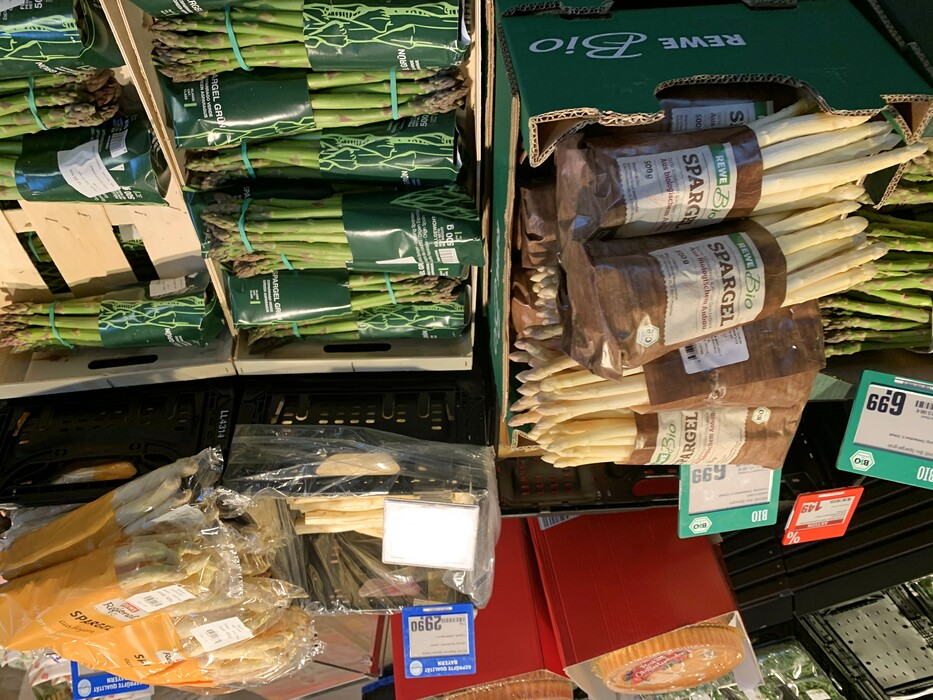

Mar 26, 2021
Die Spargelzeit, that is.
German asparagus is available at REWE near us. Lass den Spargelwahn krachen.
That building across the street from REWE and Candis Park is getting bigger everytime I walk by.

Not all of the stuff shown here is domestic or even regional. But at least the white asparagus in the yellow plastic bag is the REWE Regional brand. So it won’t be much longer until everyone’s griping about the workers imported from Eastern European countries bringing Covid in with them to steal German bikes and not appreciably drop the prices on a Pfund of asparagus.
Note: something was definitely screwy with the heart rate monitor. I was thinking about work stuff, sure, but there’s no way I got up to 197 beats per minute. I happened to see that on the watch read-out, adjusted the chest strap a little, and the numbers immediately got back down to a reasonable range.
Distance: 5.55 km
Time: 1:22
Calories: 810
Calories from fat: 25 %
Average Heart Rate: 121
Maximum Heart Rate: 197
Fat Burn: 0:33
Fitness: 0:49